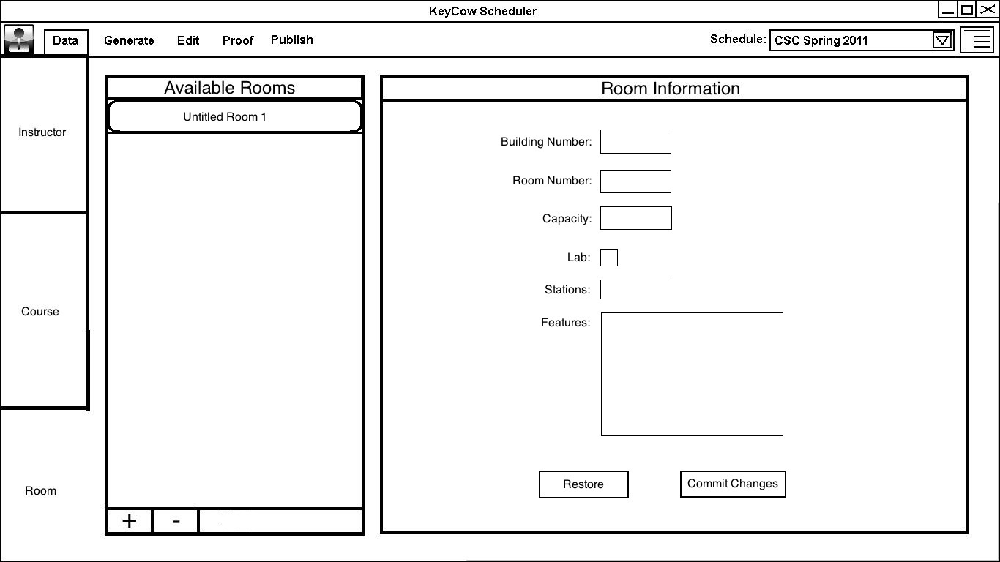
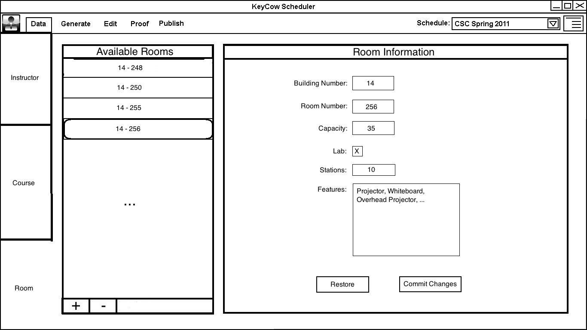

2.2.4. Add / Edit Room
Room Tab Overview
Adding or Editing a Room
The user clicks the (+) button under the Available Rooms list to open a
dialog to input the information of a new room.
The new room requires a Building Number and Room Number to be added to
the list. More options are available to distinguish the room
including: Capacity, whether the room is a lab or not, how many
computers or stations are available, and a features box where the user
can input what types of boards are in the room and whether there is a
projector, etc.
Once a room has been added to the Available Rooms list, its pertinant
information can be view by just clicking on it in the list.
This
will display all the information on the right hand side of the screen
in the Room Information field. While this information is
displayed any of it can be edited and saved to update that room.
By clicking the (-) button under the list, the selected room
can be removed.
When adding or editing a room:
- The Building field must contain only numerical values.
- The Room field must contain only numerical values.
- The Capacity field must contain only numerical values.
- The Lab checkbox may be checked or unchecked.
- The Stations field must contain only numerical values and
if there is a nonzero value in it the Lab checkbox will be checked.
- The Features field can contain any alphanumeric characters,
with separate items separated by commas.
To edit an existing room in the list, the user clicks on a room and
all the related information is filled in. The user can then
edit any of the information and click the "commit changes" button to
save the room with the new information. If the user would
like to cancel any edits made on a room they can click the "restore"
button to revert back to the last saved state.



{kind=link}
{kind=link}
{kind=link}